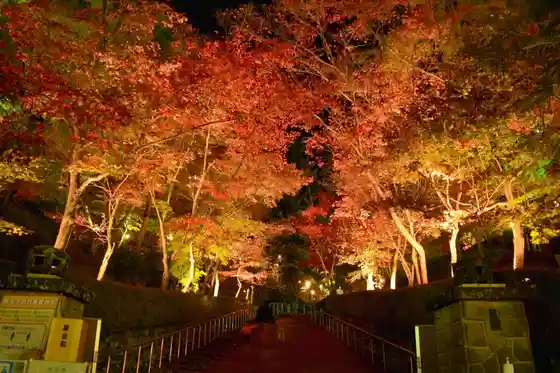
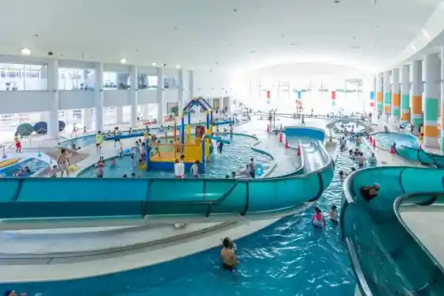
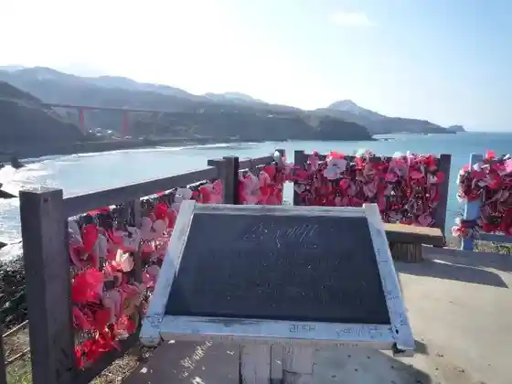
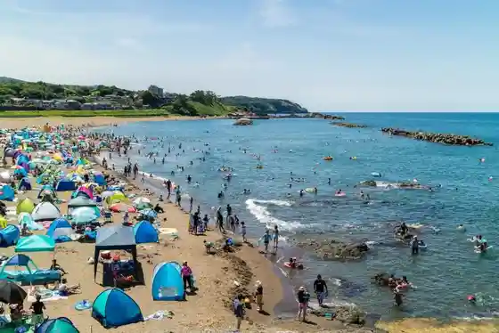

Shoun Sanso
Kashiwazaki, Niigata · 0257-21-2334 · Official / source link

Niigata Prefectural Kashiwazaki Akua Park
Kashiwazaki, Niigata · 0257-22-5555 · Official / source link

Kamomegahana Lookout (Koibito Misaki)
Kashiwazaki, Niigata · 0257-24-2238 · Official / source link

Geiha Beach
Kashiwazaki, Niigata · 0257-22-3163 · Official / source link

Yoneyama
Kashiwazaki, Niigata · 0257-21-2334 · Official / source link
Osaki Onsen (Yukiwari Kusa Baths)
Kashiwazaki, Niigata · 0257-47-2113 · Official / source link
Sekichi Beach
Kashiwazaki, Niigata · 0257-22-3163 · Official / source link
Shiiyusu Raiin
Kashiwazaki, Niigata · 0257-22-5740 · Official / source link
Sauna Horai Su (Horaizun)
Kashiwazaki, Niigata · 0257-41-6270 · Official / source link
Niigata Prefectural Kodomo Shizen Okoku
Kashiwazaki, Niigata · 0257-41-3355 · Official / source link
Seikai Kawa Beach
Kashiwazaki, Niigata · 0257-22-3163 · Official / source link
Ban Kami Nishi Ban Kami Beach
Kashiwazaki, Niigata · 0257-22-3163 · Official / source link
Kashiwazaki Minato Kanko Koryu Center (Yu Umi)
Kashiwazaki, Niigata · 0257-32-2605 · Official / source link
Oizumi Tera
Kashiwazaki, Niigata · 0257-26-2379 · Official / source link
Kashiwazaki Kokudo 116 Gosen Roadside Station (Nishiyama Furusato Park)
Kashiwazaki, Niigata · 0257-48-2839 · Official / source link
Ho Hime Shrine
Kashiwazaki, Niigata · 025-536-5459 · Official / source link
Kashiwazaki Chuo Beach
Kashiwazaki, Niigata · 0257-22-3163 · Official / source link
Ban Kami Do
Kashiwazaki, Niigata · 0257-22-2395 · Official / source link
Enma Do
Kashiwazaki, Niigata · 0257-22-2911 · Official / source link
Nagamine Oike no Hakucho
Kashiwazaki, Niigata · 0257-47-4001 · Official / source link
Ue Wa Beach
Kashiwazaki, Niigata · 0257-22-3163 · Official / source link
Niigata Sozai no Ankowo Tanoshi Mu (Shiawase Saichu)
Kashiwazaki, Niigata · 0257-22-3090 · Official / source link
Takahama Beach
Kashiwazaki, Niigata · 0257-22-3163 · Official / source link
Akasaka Yama Park
Kashiwazaki, Niigata · 0257-21-2298 · Official / source link
Ta Tashin Shamoto Dono
Kashiwazaki, Niigata · 0257-22-0567 · Official / source link
Kasa Shima Beach
Kashiwazaki, Niigata · 0257-22-3163 · Official / source link
Higashi no Wa Beach
Kashiwazaki, Niigata · 0257-22-3163 · Official / source link
Hachi Ishiyama
Kashiwazaki, Niigata · 0257-21-2334 · Official / source link
Jon no Bi Onsen (Rakuju Baths)
Kashiwazaki, Niigata · 0257-41-2222 · Official / source link
Osaki Yukiwari Kusa Village
Kashiwazaki, Niigata · 0257-47-4001 · Official / source link
Yugi Oto Campground (Nishiyama Shizentai Ken Koryu Shisetsu)
Kashiwazaki, Niigata · 0257-31-6300 · Official / source link
Saketsukami Tori Experience
Kashiwazaki, Niigata · 0257-43-9131 · Official / source link
Jogan Sono
Kashiwazaki, Niigata · 0257-41-2100 · Official / source link
Iizuka Tei (Aki Sachi En to Anzai Tokoro)
Kashiwazaki, Niigata · 0257-20-7120 · Official / source link
Echigo Yukiwari Kusa Kaido Sumaho De Sutanpurarii 2026
Kashiwazaki, Niigata · 0258-32-1187 · Official / source link
Fukura Hakkei
Kashiwazaki, Niigata · 0257-22-3163 · Official / source link
Nishi Geiha Beach
Kashiwazaki, Niigata · 0257-22-3163 · Official / source link
Ushigakubi Sonai Shukyoku
Kashiwazaki, Niigata · 0257-22-3163 · Official / source link
Sauna Tsuki Hitomune Kashi Hatago In Utero
Kashiwazaki, Niigata · 080-5526-4834 · Official / source link
Tani Ne Dam
Kashiwazaki, Niigata · 0257-22-0007 · Official / source link
Kashiwazaki Yume no Mori Park
Kashiwazaki, Niigata · 0257-23-5214 · Official / source link
Teishin Ama
Kashiwazaki, Niigata · 0257-21-2334 · Official / source link
Yakushido Beach
Kashiwazaki, Niigata · 0257-22-3163 · Official / source link
Osaki Beach
Kashiwazaki, Niigata · 0257-22-3163 · Official / source link
Ukawa Shrine no Oga Yaki
Kashiwazaki, Niigata · 0257-22-0567 · Official / source link
Akaiwa Dam
Kashiwazaki, Niigata · 0257-22-0007 · Official / source link
Ogi no Shima Kayabuki Village
Kashiwazaki, Niigata · 0257-41-3252 · Official / source link
Kashiwazaki Ritsu Museum
Kashiwazaki, Niigata · 0257-22-0567 · Official / source link
Kigaru Ni Tanoshi Meru Ryoshitsu Na Ajiwa I (Anko Jamu)
Kashiwazaki, Niigata · 0257-22-3090 · Official / source link
Chi Go no Ie
Kashiwazaki, Niigata · 0257-22-0777 · Official / source link
Anju Tera
Kashiwazaki, Niigata · 0257-27-2041 · Official / source link
Kariwa Kurohime Yama
Kashiwazaki, Niigata · 0257-21-2334 · Official / source link
Zenkon no Fudo Taki
Kashiwazaki, Niigata · 0257-22-3163 · Official / source link
Garuru no Oka Campground
Kashiwazaki, Niigata · 0257-41-3355 · Official / source link
Saba Ishikawa Dam
Kashiwazaki, Niigata · 0257-41-2070 · Official / source link
Yawarakai O Dango Niankowo Karame Te Meshi Aga Ru Wa no Dezato
Kashiwazaki, Niigata · 0257-22-3090 · Official / source link
Juo Do
Kashiwazaki, Niigata · 0257-22-3163 · Official / source link
Kawauchi Suigen Ike
Kashiwazaki, Niigata · 0257-22-0007 · Official / source link
Kashiwazaki Takayanagi Chiku
Kashiwazaki, Niigata · 0257-41-2233 · Official / source link
Nagahama Beach
Kashiwazaki, Niigata · 0257-22-3163 · Official / source link
Osaki Yukiwari Kusa Marushie
Kashiwazaki, Niigata · 0257-22-3163 · Official / source link
Doitsu Iori Ai Mingei Kan
Kashiwazaki, Niigata · 0257-21-1199 · Official / source link
Yoneyama Beach
Kashiwazaki, Niigata · 0257-22-3163 · Official / source link
Ki Village Sado Art Museum O Chaseki Experience
Kashiwazaki, Niigata · 0257-23-8061 · Official / source link
JA Kashiwazaki Aina Kan
Kashiwazaki, Niigata · 0257-28-6711 · Official / source link
Kashiwazaki City Minkatsu Do Center Machikara
Kashiwazaki, Niigata · 0257-22-2003 · Official / source link
Takauchi Yama no Katakuri
Kashiwazaki, Niigata · 0257-47-4001 · Official / source link
Hanasaka no Tanada
Kashiwazaki, Niigata · 0257-41-2233 · Official / source link
Kashiwazaki Sentoraru Beach
Kashiwazaki, Niigata · 080-7746-3437 · Official / source link
Farm Kujiranami / Ichigo Kari
Kashiwazaki, Niigata · 0257-24-7555 · Official / source link
Kadode Kayabuki Village
Kashiwazaki, Niigata · 0257-41-3370 · Official / source link
Marinsupotsu Koryu Center
Kashiwazaki, Niigata · 0257-32-2615 · Official / source link
Takayanagi Garuru no Ski Area
Kashiwazaki, Niigata · 0257-41-2158 · Official / source link
Genshu Zo no Kura Kengaku
Kashiwazaki, Niigata · 0257-23-6221 · Official / source link
Tai no Ko In Gyoran Shiokara
Kashiwazaki, Niigata · 0257-23-2476 · Official / source link
Kashiwazaki Ukawa Chiku
Kashiwazaki, Niigata · 0257-29-2179 · Official / source link
Nashi no Kida no Tanada
Kashiwazaki, Niigata · 0257-41-2233 · Official / source link
Tezukuri Nikodawatta Yasashii Aji (Kuriimu Shirodama Anmitsu)
Kashiwazaki, Niigata · 0257-22-3090 · Official / source link
Niigataken Kashiwazaki Mariina
Kashiwazaki, Niigata · 0257-21-1255 · Official / source link
Ayako Mai Hall
Kashiwazaki, Niigata · 0257-29-3811 · Official / source link
Ohiraki no Tanada
Kashiwazaki, Niigata · 0257-41-2233 · Official / source link
Kurofune Kan
Kashiwazaki, Niigata · 0257-21-1188 · Official / source link
Donarudo Kiin Center Kashiwazaki (Watashi Ha Nihombun Gaku no Subarashisa Wo Tsutae Tai)
Kashiwazaki, Niigata · 0257-28-5755 · Official / source link
Kashiwazaki Kanko Boranteiagaido Ga, Machi no Miryoku Wogo Shokai Shimasu !
Kashiwazaki, Niigata · 0257-22-3163 · Official / source link
Machi Aruki Nochi no Kohii Tsuki ! Kasa Shima Machi Aruki Puran
Kashiwazaki, Niigata · 0257-31-1023 · Official / source link
Homba no Niigata De Kiki Sake Shi Kara Manabu, Nihonshu Shiin Taiken ! Gui no Mi Tsuki
Kashiwazaki, Niigata · 0257-26-2522 · Official / source link
Kadode Washi Takashi no Kigami Workshop
Kashiwazaki, Niigata · 0257-41-2361 · Official / source link
Kiki Sake Shi no Sake Dangi (+ Zekkei Tsuki) De Nihonshu Tori Ninaro Puran
Kashiwazaki, Niigata · 0257-26-2522 · Official / source link
no Mbiri Asa 8 Toki Shugo ! Kashiwazaki Ban Kami Beach De Fandaibingu
Kashiwazaki, Niigata · 0257-22-2774 · Official / source link
Kuki Ni Fure Jukusei Shiteiku Iki Teiru (Kuro Hitsuji Kan)
Kashiwazaki, Niigata · 0257-22-2337 · Official / source link
Kogyo Beika no Ishizue Wo Kizui Ta Meiji Umare no Osembei, Meibutsu (Ajiro Yaki (Ajiroyaki))
Kashiwazaki, Niigata · 0257-22-2337 · Official / source link
Kinshu no Echigo Teien Meguri Autumn Leaves to Umiyama no Sachi Yuttari Mankitsu Kosu
Kashiwazaki, Niigata · 0257-21-2334 · Official / source link
Fukkura Amai Mayu Tama, Shiawase Iro no (Kofuku Arare)
Kashiwazaki, Niigata · 0257-22-2337 · Official / source link